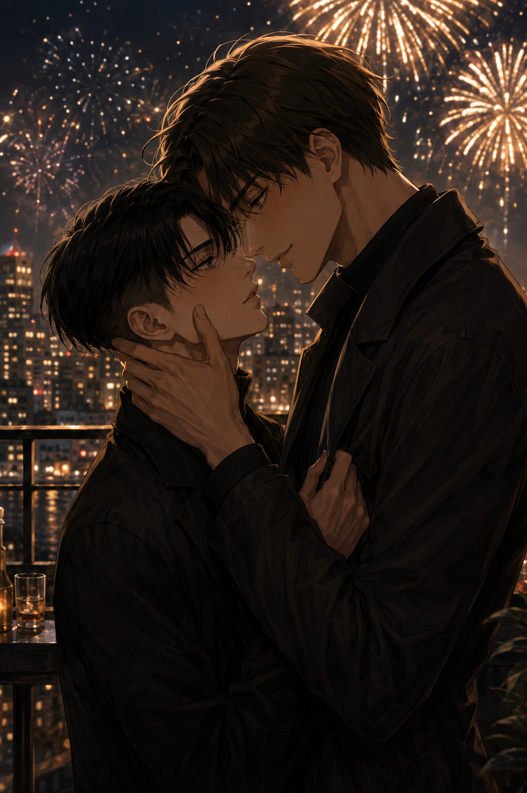

Happy New Year
Levi — POV

They had just moved in together, boxes still half-unpacked, the apartment smelling faintly of cardboard and new beginnings. Levi had chosen the evening without really choosing it — the couch, blankets, snacks eaten straight from their packaging.
He hadn’t wanted noise.
Hadn’t wanted crowds or expectations.
He had wanted Eren’s warmth.
That had been all.
They had watched something forgettable, Eren half-asleep against his shoulder, Levi’s arm wrapped around him like an anchor. When midnight came, they barely noticed. A quiet kiss, murmured happy new year, Eren smiling like that alone was enough.
It had been.
This year was different.
Eren had planned everything.
Levi had known the moment Eren woke him up that morning with that particular brightness in his eyes — the one that meant trust me. Levi had rolled his eyes, muttered something about crowds, about how this was unnecessary, but he had gotten dressed anyway.
Because it was Eren.
Brazilian food first.
The table was already crowded when Levi sat down, dishes layered over one another like a careful excess. Colors, steam, unfamiliar scents mixing together. He recognized nothing, and somehow trusted everything.
Golden coxinhas, still hot, crisp beneath his fingers, giving way to something impossibly soft. Pão de queijo, small and addictive, cheese stretching when broken apart, warmth lingering on his tongue. Rice and black beans, simple and grounding, farofa sprinkled generously, adding texture where he hadn’t known to expect it. Slices of tender meat, glazed and fragrant, cooked slowly, meant to be shared.
“You’re supposed to eat well tonight,” Eren said, smiling as he filled Levi’s plate again. “It’s for abundance. For luck. For starting the year full.”
Levi let him. Took his time. Noticed how the food settled, comforting rather than heavy, how every bite felt intentional.
Eren was practically glowing, explaining traditions between mouthfuls, pointing out what he had grown up eating, what was meant to bring prosperity, what was meant to keep what mattered close. Levi pretended to resist. He always did. But he tasted everything Eren handed him without argument.
He watched Eren closely — the way his shoulders loosened, the way his voice softened when he talked about home, the way his laughter came easier, fuller, unguarded.
Levi loved seeing him like that.
Loved that this joy was something he got to witness up close.
Loved that this, too, was something Eren had chosen to share with him.
This is what home feels like.
Ice skating came next.
Levi had been prepared to hate it.
He did not.
Eren, on the other hand, was furious.
“This isn't fair,” Eren complained, gripping Levi’s hand far too tightly as he wobbled. “I tried this once years ago. I was terrible then too.”
Levi glanced at him. Took in the scowl, the stiff posture, the way Eren’s pride was clearly taking this as a personal insult.
“At least you’re consistent,” Levi said.
“You’re enjoying this.”
“I wouldn’t say enjoying,” Levi replied, gliding forward with careful confidence. “But I am upright.”
“Your ass hasn’t even met the ground.”
“That’s called balance.”
“That’s called betrayal.”
Levi laughed — actually laughed — the sound surprising even himself. Warm, brief, real. Eren blinked at him, then smiled despite himself.
“Don’t get used to it,” Levi added, squeezing his hand. “I’m not good. I’m just… less bad.”
Eren muttered something about unfair advantages but didn’t let go. Their fingers stayed intertwined even when Eren steadied, even when Levi no longer needed to slow down for him.
They walked after, hands still linked, breath fogging in the cold, shoulders brushing with every step. Levi felt full in a way that had nothing to do with food.
At the rooftop bar, the city stretched out beneath them, lights alive and impatient. They shared drinks, leaned into each other against the railing, coats pulled close. Eren’s thumb traced idle circles against Levi’s knuckles, grounding him.
“This wasn’t a bad idea,” Levi admitted quietly.
Eren turned to him, eyes bright. “See?” he said, amused. “When you’re not being annoying, there’s a lot of things to try.”
Levi snorted. “Careful.”
“I love you even when you’re difficult.”
Levi rolled his eyes, but his mouth betrayed him, curving despite himself.
When the countdown began, Levi barely heard it.
Fireworks bloomed in the sky — gold, white, impossible — but Levi was already looking at Eren. At the warmth in his eyes, the certainty there. At the man who had given him quiet when he needed it, and movement when he was ready.
When midnight struck, Eren kissed him.
It was gentle, unhurried. Lips warm, familiar, pressing together like a promise rather than a spark. Eren’s hand rested at Levi’s jaw, steady, reverent.
Levi kissed him back with the same certainty. Even now, even after everything, Eren’s touch never felt ordinary. It always felt like the first time.
A kiss that carried the year behind it and the one ahead.
“I love you,” Eren whispered.
“I love you,” Levi answered, immediate, sure. “This year can only be good.”
“Because we’re together,” Eren said.
Levi rested his forehead against Eren’s. He believed it.
He felt it settle into him — the spark, the comfort, the closeness — all at once. Like this was what time had been leading him toward all along.
“Happy New Year,” Eren murmured against his lips.
Levi rested his forehead against Eren’s. “I’m glad I’m here with you.”
He meant everywhere.
He always had.
The fireworks faded. The city kept breathing.
This year would definitely be good.